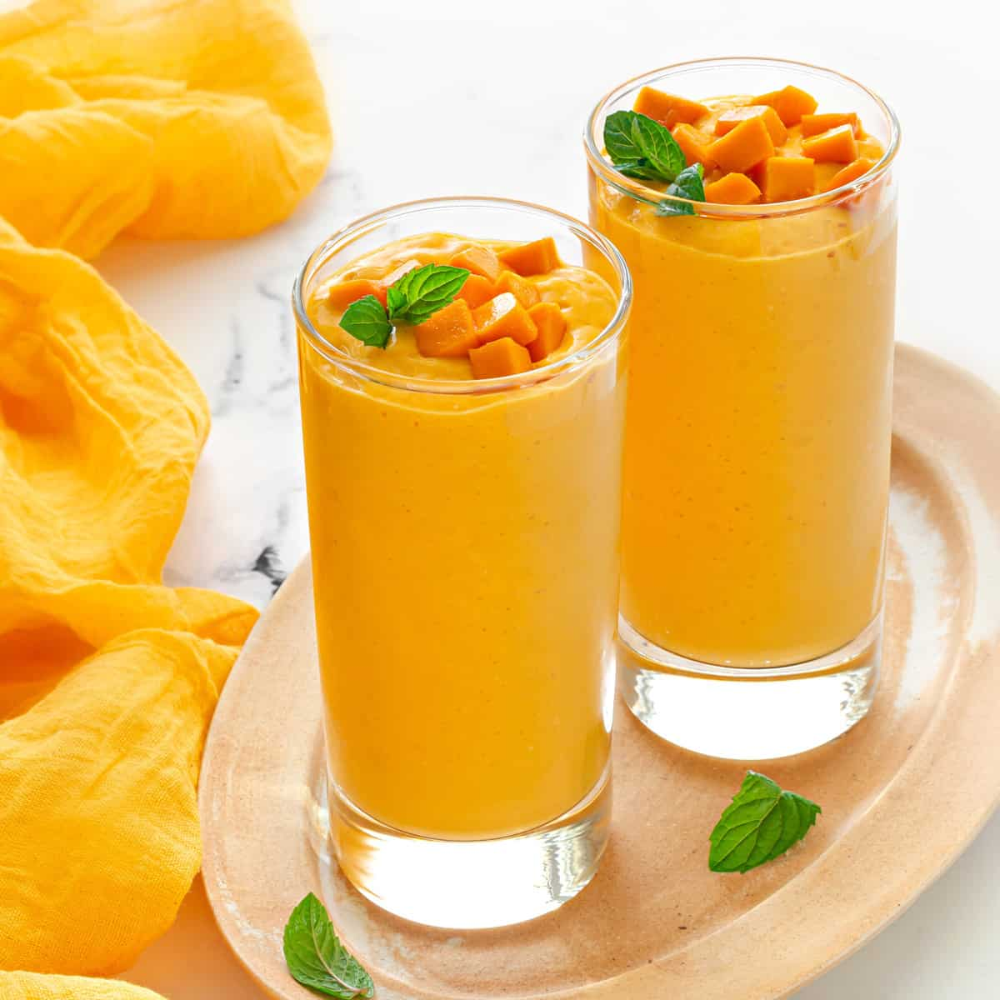

Mango-Peach Smoothie

Description
The Mango-Peach Smoothie is a delicious and refreshing beverage that blends the sweetness of mangoes with the
juicy freshness of peaches. It's perfect for a healthy breakfast or a midday snack.
Ingredients
- 1 ripe mango, peeled and pitted
- 2 ripe peaches, pitted
- 1 banana
- 1 cup Greek yogurt
- 1/2 cup orange juice
- 1 tablespoon honey (optional)
- Ice cubes (optional)
Steps
- Cut the mango and peaches into chunks.
- Place the mango, peaches, banana, Greek yogurt, and orange juice in a blender.
- Blend until smooth. If desired, add honey for extra sweetness.
- Add ice cubes and blend again until you reach your preferred consistency.
- Pour into glasses and serve immediately.